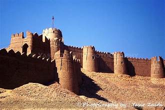
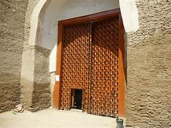

Kot Diji Fort
A historic fort of Sindh, symbolizing Talpur dynasty’s strength and Sindhi heritage.
A historic fort of Sindh, symbolizing Talpur dynasty’s strength and Sindhi heritage.
Kot Diji Fort is located near Khairpur, Sindh, at the edge of the Indus Valley. Built before the British era, the fort stands on a steep hill and overlooks the ancient town of Kot Diji.
The site was once part of the Talpur dynasty’s defense system and today it is one of the most important archaeological and tourist attractions of Sindh.
The fort is built from kiln-baked bricks on a limestone hill rising about 110 feet above the ground. Its walls extend for nearly 1.8 kilometers.
The structure includes bastions, cannons, gates, and chambers for troops. Its design highlights traditional Sindhi military architecture.
